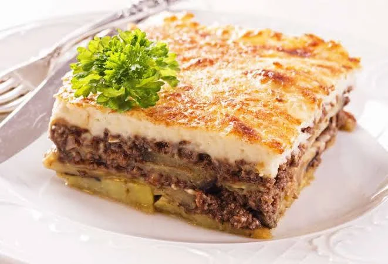

Mousakas Recipe
Back to Home

Description
This is a traditional Greek mousakas recipe that serves 6 people.
Ingredients
- 2 large eggplants
- 1 pound ground beef
- 1 onion, diced
- 3 cloves garlic, minced
- 1 can (28 oz) crushed tomatoes
- 2 tablespoons tomato paste
- 1 teaspoon dried oregano
- 1/2 teaspoon ground cinnamon
- 1/4 teaspoon ground nutmeg
- 1/2 teaspoon salt
- 1/4 teaspoon ground black pepper
- 1/4 cup chopped fresh parsley
- 1/2 pound macaroni
- 2 tablespoons butter
- 2 tablespoons all-purpose flour
- 2 cups milk
- 1/4 teaspoon ground nutmeg
- 1/2 cup grated Parmesan cheese
- 1/2 cup shredded mozzarella cheese
Instructions
< li > Preheat oven to 350 degrees F (175 degrees C). In a large skillet, cook the ground beef, onion, and garlic over medium heat until well browned. Stir in the tomato sauce, oregano, cinnamon, nutmeg, salt, pepper, and parsley. Simmer, covered, for about 20 minutes, stirring occasionally.
< li > Bring a large pot of lightly salted water to a boil. Cook the macaroni in boiling water for 8 to 10 minutes. Drain macaroni, and set aside.
< li > In a medium saucepan, melt the butter over medium heat. Stir in the flour and cook for 1 minute. Gradually whisk in the milk, and cook until thickened, about 5 minutes. Remove from heat and stir in the nutmeg, Parmesan cheese, and mozzarella cheese.
< li > In a greased 9x13 inch baking dish, layer half of the macaroni, followed by half of the meat sauce, and then half of the cheese sauce. Repeat the layers, and top with the remaining cheese sauce. Bake in preheated oven for 30 minutes, or until the top is golden brown. Let stand for 10 minutes before serving.